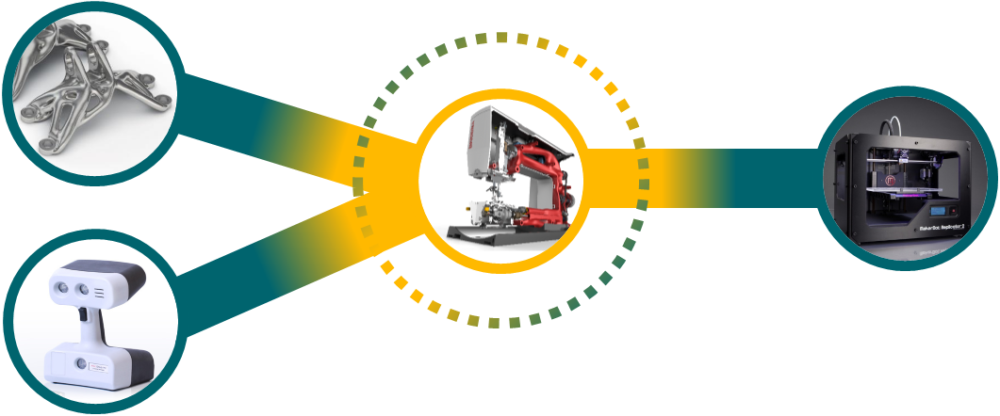
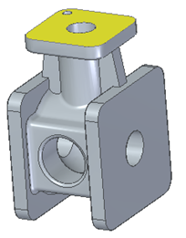

Convergent Modeling
Convergent Modeling is an enabling technology for design engineering workflows that involve topology optimization, mesh modeling, and 3D prototyping with additive manufacturing. The goal of convergent modeling is to support simultaneous design operations for solid bodies and for mesh bodies in the same design space.
In Solid Edge, you can work with classic, solid-body Boolean (B-Rep) models and non-homogenous, facet-body (mesh) models in a single document.
From left to right, the following diagram shows how Solid Edge combines convergent modeling workflows with Synchronous Technology for Mesh Models and B-Rep Models.
-
Generative Design—Generates a weight-optimized shape that is lighter, more organic-looking, and requires less material.
-
Reverse Engineering—Transforms imported or scanned mesh bodies into Boolean (B-Rep) design bodies.
-
Synchronous Technology directly edits and manipulates the design bodies to perfect the results.
-
Ordered modeling enables you to create or modify features on solid, facet, and mixed mesh bodies.
-
Additive Manufacturing—Solid Edge directly submits the optimized STL files for 3D printing.

For example:
-
Digitally scanned mesh body models can be opened and reverse-engineered into solid body models.
-
Mesh body models, solid body models, and mixed body models can coexist in the same part, sheet metal, and assembly documents and share common workflow operations.
-
Solid body models can be converted to mesh body models in Computer-aided Engineering (CAE) workflows to prepare models for 3D printing.
By allowing traditional solid body modeling operations to work directly on mesh body models, you can achieve dramatic improvements in product design efficiency. Mesh body models and mixed body models are often needed in the design environment.
Types of supported convergent workflows
Solid Edge provides support for convergent workflows that allow:
-
Operations on facets, surfaces, and solids without conversion.
-
Geometry to be created around and on mesh bodies.
-
Boolean operations to be performed on mesh data.
-
Hybrid models, in which you can place mesh and B-Rep faces in a single body.
Design problems solved with convergent workflows
Convergent workflows solve design problems that arise when working with mesh data in traditional solid body design environments. Previously:
-
Mesh data had to be converted to surfaces and solids to support modeling operations.
-
The reverse engineering workflow required to convert mesh data into solids is often a slow and complex operation that requires special skills to yield usable results.
Hybrid modeling
Solid Edge supports hybrid modeling, where models can contain a mix of mesh bodies and classical (analytical, spline) geometries. Such geometry can be generated in Solid Edge by mixing classical B-rep bodies with mesh bodies, or by adding features to mesh bodies output from generative design, or by importing geometry from other applications that create mixed models.
Solid Edge supports the creation and use of hybrid models in part, sheet metal, assembly, and draft. Hybrid models offer the precision and design control of classical and analytical elements, while also integrating mesh, scanned, and facet geometry in a single model.

You can import and export mixed mesh bodies from formats that support mixed bodies, such as Parasolid and PLM XML.
Displaying facet edges
The View tab→Style group→Show Facet Edge command controls the display of facet edges within a model. When selected, the command displays the facets; when deselected, the facet edges are not displayed.
